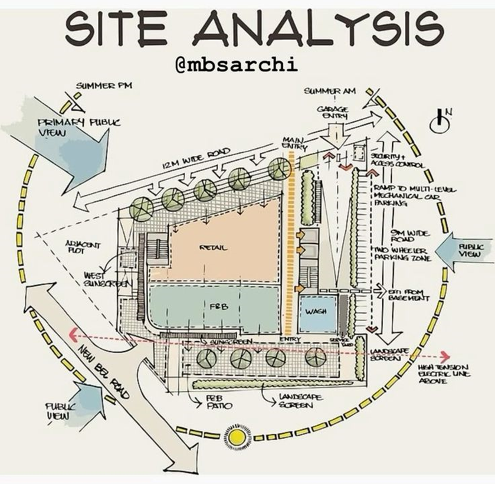
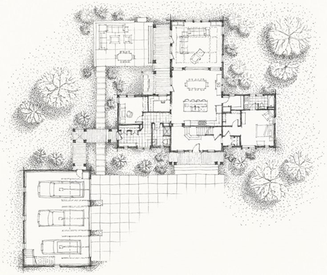
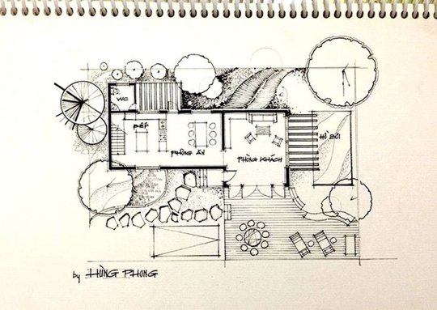
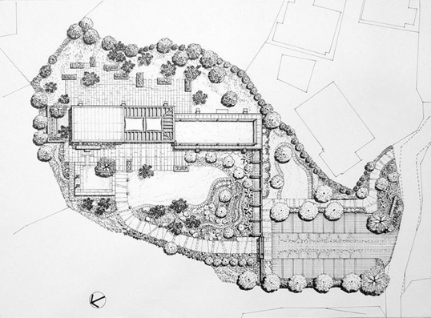
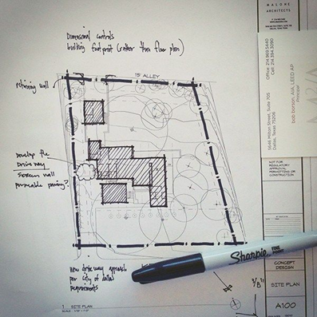

Session 3
Activity 1: Legal And Regulatory Framework
Understanding zoning laws, building codes, and other regulatory constraints affecting the site is crucial. Visit VicPlan (to access the site, click on the 'Open' icon below).
Produce a planning map of the site mentioned in your final project design brief. A base map is required for their next activity
Activity 2: Site Analysis Visual
In this unit, we will focus on producing hand sketched site analysis diagrams. In the Built Environment Communication and Skills unit, digital analysis and visualisation tools will be introduced. Now, please go to Pinterest and search for site analysis sketches. Identify one sample site analysis sketch and use it as a sample for the next activity.
Activity 3: Site Analysis Practice
Use the base map you retrieved from vicplan or google map as the base. Collect information around the site, based on the aspects discussed in this class. Place your tracing paper on top of the site map and sketch out the collected information. You can try to achieve the same visual like the sample you chose in the previous activity.

Activity 4: Site Plan Sketch
Based on the site analysis and your initial design response sketch from Session 1, produce a site plan sketch. Pay attention to scale, dimension and orientation. You can make a start in class and finish it after class.




Session 3: AutoCAD II
Please download a copy of the following document: AutoCAD II